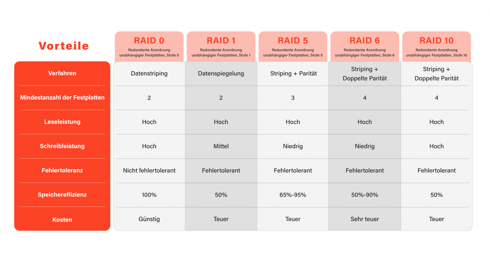
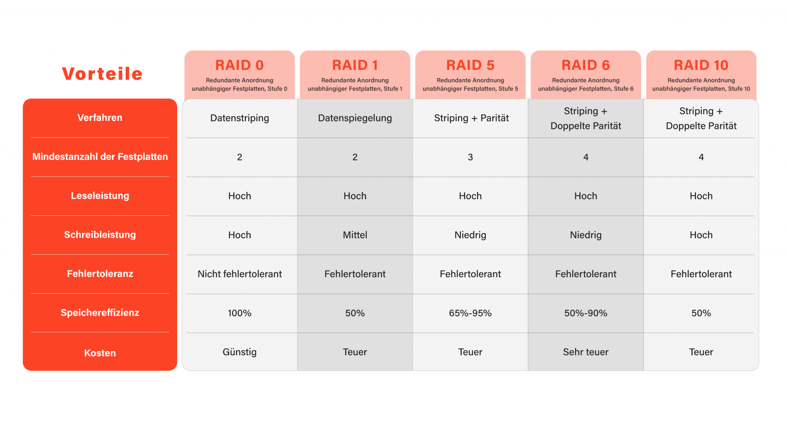

Was ist RAID?
RAID kombiniert mehrere physische Laufwerke zu einem logischen Verbund. Ziel: höhere Ausfallsicherheit, mehr Leistung oder eine Mischung aus beidem.
Wichtige RAID-Level
- RAID 0: Striping – maximale Geschwindigkeit, keine Redundanz.
- RAID 1: Spiegelung – hohe Sicherheit, einfache Redundanz.
- RAID 5: Parität – gute Balance aus Kapazität & Schutz.
- RAID 6: Doppelte Parität – 2 Defekte tolerierbar.
- RAID 10: Spiegelung + Striping – schnell & sicher.
Hinweis: RAID schützt nicht vor Malware oder versehentlichem Löschen.


 

Aufgabe des Bauteils (RAID-Controller)
Datenverteilung
Steuert Striping, Mirroring und Parität.Fehlerbehandlung
Erkennt defekte Laufwerke, Sektorfehler und leitet den Rebuild ein.Caching & Queueing
Write-Back/Write-Through, I/O-Optimierung.Hardware vs. Software
- Software-RAID: flexibel, günstig, nutzt CPU.
- Hardware-RAID: dedizierte Controller mit Cache.

Anbindung an den Rechner / Schnittstellen
Interne Schnittstellen
- SATA: bis 6 Gbit/s
- SAS: 12–24 Gbit/s
- NVMe: extrem niedrige Latenz
Externe Anbindung
- USB 3.x – einfach
- Thunderbolt – bis 40 Gbit/s
- NAS/SAN – RAID im Netzwerkgerät
Die wichtigsten Kenngrößen
Kapazität
- RAID 0: Summe
- RAID 1: kleinste Platte
- RAID 5: Summe – 1 Platte
- RAID 6: Summe – 2 Platten
- RAID 10: ~50%
IOPS / Durchsatz
Unterschied zwischen vielen kleinen vs. großen Transfers.Latenz
NVMe minimal, HDD maximal.Fehlertoleranz
1–2 Laufwerke je nach Level.Rebuild-Zeit
Stunden bis Tage.Eignung und Leistungsbewertung
Schritte
- Ziel festlegen
- Workload analysieren
- Medium wählen
- RAID-Level
- Schnittstelle prüfen
- Controller/Software
- Benchmarken
Daumenregeln
- Viele kleine Zugriffe → SSD/NVMe + RAID 10
- Große Dateien → HDD + RAID 6
- Hohe Schreiblast → RAID 10/6
TL;DR – Kurzfazit
- Tempo + Schutz: RAID 10
- Kapazität + Sicherheit: RAID 6
- Einfach: RAID 1
- Nur Tempo: RAID 0